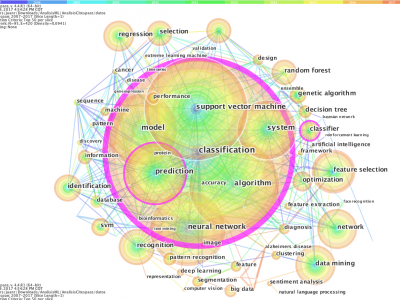
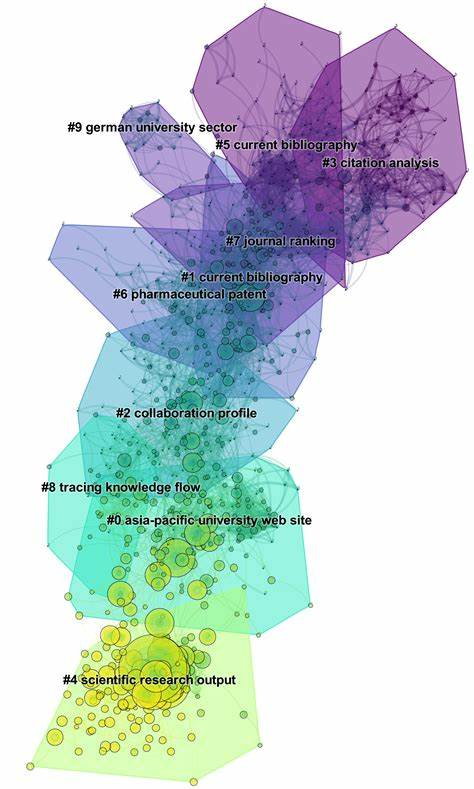
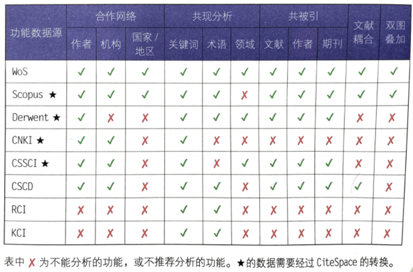

在科研工作中，我们常常需要面对海量的文献，如何在这些文献当中找出值得精读、细读的关键文 献，挖掘学科前沿，找到研究热点成为了开展研究之前首先需要解决的问题。CiteSpace是陈超美教 授开发的一款文献计量学软件，能够将文献之间的关系以科学知识图谱的方式可视化的展现在操作者面前， 既能帮助我们梳理过去的研究轨迹，也能使得我们对未来的研究前景有一个大概的认识。 |
 |
CiteSpace可分析的数据库（主要）
|
CiteSpace学习资料汇总
|
|  | CiteSpace可以处理的数据源及可用功能 |